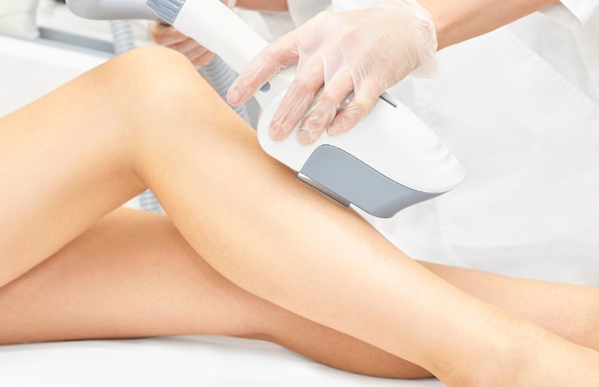

Hướng dẫn triệt lông chân hiệu quả và an toàn từ A đến Z
Tổng quan về triệt lông chân và tầm quan trọng
Triệt lông chân đã trở thành một phần không thể thiếu trong quy trình chăm sóc cá nhân của nhiều người, đặc biệt là phụ nữ. Việc loại bỏ lông chân không chỉ mang lại cảm giác tự tin mà còn giúp da chân trở nên mịn màng, sạch sẽ hơn.
Theo các nghiên cứu gần đây, khoảng chừng 85% phụ nữ trong độ tuổi từ 18-45 thực hiện triệt lông chân thường xuyên. Điều này cho thấy nhu cầu về các phương pháp triệt lông chân hiệu quả và an toàn ngày càng tăng cao.
Lông chân phát triển do ảnh hưởng của hormone, đặc biệt là testosterone. Mặc dù lông chân có chức năng bảo vệ da khỏi các tác nhân bên ngoài, nhiều người vẫn lựa chọn triệt lông chân vì lý do thẩm mỹ và thoải mái cá nhân.

Tổng hợp các phương pháp triệt lông chân phổ biến
Hiện nay có rất nhiều phương pháp triệt lông chân khác nhau, mỗi phương pháp đều có những ưu điểm và nhược điểm riêng. Việc lựa chọn phương pháp phù hợp phụ thuộc vào nhiều yếu tố như:
- Loại da và độ nhạy cảm của da chân
- Mật độ và độ dày của lông chân
- Ngân sách và thời gian bạn có thể đầu tư
- Mức độ đau đớn mà bạn có thể chịu đựng
- Kết quả mong muốn về độ bền và hiệu quả
Các phương pháp triệt lông chân chủ yếu được chia thành hai nhóm lớn: phương pháp tạm thời và phương pháp lâu dài. Phương pháp tạm thời bao gồm cạo, wax, kem triệt lông, trong khi phương pháp lâu dài chủ yếu là laser và điện phân.
Triệt lông chân bằng laser - Phương pháp hiện đại nhất
Triệt lông chân bằng laser được coi là phương pháp hiện đại và hiệu quả nhất hiện nay. Công nghệ laser hoạt động bằng cách phát ra những tia sáng có bước sóng đặc biệt, tập trung vào melanin trong nang lông, làm phá hủy nang lông từ gốc.
Ưu điểm của triệt lông chân bằng laser
- Hiệu quả cao: Có thể loại bỏ khoảng chừng 80-90% lông chân sau 6-8 buổi điều trị
- Kết quả lâu dài: Lông chân có thể không mọc lại trong nhiều năm
- Ít đau đớn: Cảm giác như kim châm nhẹ, có thể chịu đựng được
- Không gây tổn thương da: Khi thực hiện đúng cách, laser không làm tổn hại da xung quanh
- Tiết kiệm thời gian: Mỗi buổi điều trị chỉ mất khoảng chừng 30-45 phút
Nhược điểm và hạn chế
- Chi phí cao, khoảng chừng 2-5 triệu đồng cho một liệu trình hoàn chỉnh
- Cần nhiều buổi điều trị, thường từ 6-10 buổi
- Hiệu quả phụ thuộc vào màu sắc và độ dày của lông chân
- Có thể gây kích ứng da nhẹ sau điều trị
Quy trình triệt lông chân bằng laser
Quy trình triệt lông chân bằng laser thường bao gồm các bước sau:
- Tư vấn và kiểm tra tình trạng da chân
- Cạo sạch lông chân trước khi điều trị 24-48 giờ
- Làm sạch và khử trùng vùng da cần điều trị
- Thực hiện điều trị laser theo từng vùng nhỏ
- Bôi gel làm dịu da sau khi hoàn thành
Triệt lông chân bằng wax - Phương pháp truyền thống hiệu quả
Wax là một trong những phương pháp triệt lông chân phổ biến và lâu đời nhất. Phương pháp này sử dụng sáp nóng hoặc sáp lạnh để loại bỏ lông chân từ gốc, giúp da chân mịn màng trong thời gian khoảng chừng 3-6 tuần.
Các loại wax triệt lông chân
- Wax nóng: Sử dụng sáp được làm nóng, có khả năng bám dính tốt với lông chân
- Wax lạnh: Sáp có sẵn trên miếng dán, tiện lợi để sử dụng tại nhà
- Wax đường: Sử dụng hỗn hợp đường, nước chanh và nước, tự nhiên và ít gây kích ứng
- Wax hạt đậu: Loại sáp mềm, phù hợp với da nhạy cảm
Ưu điểm của wax triệt lông chân
- Kết quả bền lâu hơn so với cạo lông
- Lông chân sẽ mọc lại mỏng và mềm hơn
- Chi phí hợp lý, có thể thực hiện tại nhà
- Phù hợp với mọi loại da chân
- Không cần thiết bị đắt tiền
Cách thực hiện wax triệt lông chân tại nhà
Để thực hiện triệt lông chân bằng wax tại nhà an toàn và hiệu quả, bạn cần thực hiện theo các bước sau:
- Làm sạch da chân và để khô hoàn toàn
- Tắm nước nóng để mở lỗ chân lông
- Thoa một lớp wax mỏng theo chiều mọc của lông
- Đặt miếng vải lên trên và ấn chặt
- Giật nhanh ngược chiều mọc lông
- Làm sạch sáp dư thừa bằng dầu dừa hoặc dầu oliu

Kem triệt lông chân - Giải pháp nhẹ nhàng cho da nhạy cảm
Kem triệt lông chân là một phương pháp nhẹ nhàng, phù hợp với những người có da nhạy cảm hoặc sợ đau. Kem triệt lông chân hoạt động bằng cách hòa tan cấu trúc protein của lông, giúp lông chân dễ dàng được loại bỏ.
Thành phần chính trong kem triệt lông chân
- Calcium thioglycolate: Thành phần chính giúp hòa tan protein trong lông
- Sodium hydroxide: Giúp tăng cường hiệu quả triệt lông
- Các chất dưỡng ẩm: Aloe vera, glycerin giúp bảo vệ da
- Hương liệu: Giúp che mùi hóa chất của kem
Cách sử dụng kem triệt lông chân hiệu quả
Để đạt được kết quả tốt nhất khi sử dụng kem triệt lông chân, bạn cần thực hiện đúng quy trình:
- Làm sạch da chân và lau khô hoàn toàn
- Thoa một lớp kem dày đều trên vùng da có lông
- Để kem tác dụng theo thời gian hướng dẫn (thường 5-10 phút)
- Dùng spatula đi kèm để gạt bỏ kem và lông chân
- Rửa sạch bằng nước mát và thoa kem dưỡng ẩm
Lưu ý an toàn khi sử dụng kem triệt lông chân
- Luôn thực hiện test da trước khi sử dụng
- Không để kem tiếp xúc với vùng da bị tổn thương
- Không sử dụng kem quá thời gian quy định
- Tránh tiếp xúc với mắt và niêm mạc
- Ngừng sử dụng nếu có dấu hiệu kích ứng
Máy triệt lông chân - Giải pháp tiện lợi cho gia đình
Máy triệt lông chân (epilator) là thiết bị điện tử được thiết kế để loại bỏ lông chân bằng cách nhổ lông từ gốc. Đây là một khoản đầu tư một lần nhưng có thể sử dụng lâu dài, giúp tiết kiệm chi phí triệt lông chân.
Các loại máy triệt lông chân phổ biến
- Máy epilator khô: Sử dụng trên da khô, phù hợp cho việc triệt lông chân nhanh chóng
- Máy epilator ướt: Có thể sử dụng trong phòng tắm, giúp giảm đau
- Máy epilator có đèn LED: Giúp nhìn rõ lông chân mỏng và màu sáng
- Máy epilator đa chức năng: Kết hợp nhiều đầu cạo cho các vùng khác nhau
Ưu điểm của máy triệt lông chân
- Tiết kiệm chi phí trong dài hạn
- Tiện lợi sử dụng tại nhà
- Kết quả bền lâu khoảng chừng 3-4 tuần
- Lông chân mọc lại sẽ mỏng và yếu hơn
- Không cần sử dụng hóa chất
Hướng dẫn sử dụng máy triệt lông chân
Để sử dụng máy triệt lông chân hiệu quả và an toàn:
- Làm sạch da chân và giữ khô ráo (với máy khô)
- Kéo căng da chân để máy hoạt động dễ dàng hơn
- Di chuyển máy chậm rãi ngược chiều mọc lông
- Giữ máy vuông góc với da chân
- Thoa kem dưỡng ẩm sau khi hoàn thành
Phương pháp triệt lông chân tự nhiên an toàn
Các phương pháp triệt lông chân tự nhiên được nhiều người ưa chuộng vì an toàn, ít tác dụng phụ và chi phí thấp. Mặc dù hiệu quả có thể chậm hơn so với các phương pháp hiện đại, nhưng chúng rất phù hợp cho những người có da nhạy cảm.
Hỗn hợp nghệ và sữa tươi
Nghệ chứa curcumin có tác dụng ức chế sự phát triển của lông chân. Kết hợp với sữa tươi sẽ giúp dưỡng ẩm và làm mềm da chân.
- Trộn 2 thìa cà phê bột nghệ với 3 thìa cà phê sữa tươi
- Thoa hỗn hợp lên da chân và massage nhẹ nhàng
- Để trong 15-20 phút rồi rửa sạch bằng nước ấm
- Thực hiện 2-3 lần/tuần để đạt hiệu quả tốt nhất
Đường và chanh - Wax tự nhiên tại nhà
Đây là phương pháp triệt lông chân tự nhiên được yêu thích nhất do hiệu quả cao và an toàn:
- Trộn 2 cốc đường, 1/4 cốc nước chanh tươi, 1/4 cốc nước
- Đun nhỏ lửa cho đến khi hỗn hợp có màu vàng nâu
- Để nguội đến nhiệt độ phù hợp
- Thoa lên da chân và sử dụng như wax thông thường
Papaya xanh và nghệ
Papaya xanh chứa enzyme papain có khả năng làm yếu nang lông chân:
- Nghiền nhuyễn 2 thìa cà phê papaya xanh
- Thêm 1/2 thìa cà phê bột nghệ
- Thoa đều lên da chân và massage trong 15 phút
- Rửa sạch và thực hiện thường xuyên
Chuẩn bị trước khi triệt lông chân
Việc chuẩn bị kỹ lưỡng trước khi thực hiện triệt lông chân sẽ giúp đạt được kết quả tốt nhất và giảm thiểu rủi ro. Dưới đây là những bước chuẩn bị quan trọng mà bạn cần thực hiện:
Chuẩn bị da chân
- Tẩy tế bào chết: Thực hiện 2-3 ngày trước khi triệt lông để loại bỏ tế bào chết
- Giữ da ẩm: Dưỡng ẩm hàng ngày để da chân mềm mại
- Tránh tiếp xúc với ánh nắng: Không tắm nắng ít nhất 1 tuần trước khi triệt lông
- Tránh các sản phẩm có cồn: Không sử dụng các sản phẩm chứa cồn trong 24 giờ trước
Chuẩn bị dụng cụ và vật liệu
- Kiểm tra tình trạng và độ sạch sẽ của dụng cụ
- Chuẩn bị đầy đủ vật liệu cần thiết
- Sẵn sàng các sản phẩm chăm sóc da sau triệt lông
- Chuẩn bị thuốc giảm đau nếu cần thiết
Lựa chọn thời điểm phù hợp
Thời điểm thực hiện triệt lông chân cũng ảnh hưởng đến hiệu quả và cảm giác đau:
- Thực hiện vào buổi tối để da có thời gian phục hồi
- Tránh những ngày trong chu kỳ kinh nguyệt
Chăm sóc sau triệt lông chân
Sau khi triệt lông chân, làn da trở nên nhạy cảm và dễ bị tổn thương. Vì vậy, việc chăm sóc đúng cách sẽ giúp phục hồi da nhanh chóng, giảm kích ứng và kéo dài hiệu quả triệt lông.
Các bước chăm sóc da sau khi triệt lông
- Làm dịu da: Sử dụng gel lô hội hoặc kem dưỡng có thành phần làm dịu (như panthenol, allantoin)
- Tránh nhiệt độ cao: Không tắm nước nóng, xông hơi hoặc tập thể dục mạnh trong 24-48 giờ
- Không sử dụng hóa chất mạnh: Tránh dùng sản phẩm chứa cồn, axit hoặc chất tẩy rửa
- Dưỡng ẩm đều đặn: Giúp phục hồi lớp màng bảo vệ tự nhiên của da chân
- Mặc quần áo rộng: Tránh ma sát để da không bị tổn thương
Thời gian theo dõi da
Sau khi triệt lông chân, bạn nên theo dõi làn da từ 24 đến 72 giờ để phát hiện các phản ứng bất thường như phát ban, nổi mẩn đỏ hoặc ngứa rát. Nếu tình trạng kéo dài, hãy tham khảo ý kiến bác sĩ da liễu.
Lưu ý quan trọng khi triệt lông chân
Để quá trình triệt lông chân diễn ra an toàn, hiệu quả và tránh được các rủi ro, bạn nên lưu ý những điều sau:
- Không triệt lông khi da chân đang bị viêm, trầy xước hoặc cháy nắng
- Không lạm dụng triệt lông quá thường xuyên (nên để da nghỉ ngơi tối thiểu 2-4 tuần)
- Tránh tiếp xúc trực tiếp với ánh nắng mặt trời sau khi triệt lông
- Không gãi hoặc chà xát mạnh vào vùng da vừa triệt lông
- Luôn vệ sinh dụng cụ sạch sẽ nếu tự thực hiện tại nhà
- Ưu tiên sản phẩm triệt lông rõ nguồn gốc, có kiểm định da liễu
Lời khuyên từ chuyên gia
Các chuyên gia da liễu khuyên bạn nên lựa chọn phương pháp triệt lông phù hợp với loại da và tần suất hợp lý để không gây tổn hại đến hàng rào bảo vệ da tự nhiên.
Trải nghiệm triệt lông chân an toàn – hiệu quả cùng LG Clinic
Với hơn 8 chi nhánh trên toàn TP.HCM và Bình Dương, LG Clinic tự hào là địa chỉ làm đẹp được hàng ngàn khách hàng tin tưởng lựa chọn. Sở hữu hệ thống công nghệ hiện đại, đội ngũ kỹ thuật viên được đào tạo bài bản cùng không gian chuẩn spa 5 sao, LG Clinic cam kết mang đến dịch vụ triệt lông chân hiệu quả vượt trội – không đau rát, không tổn thương da và phù hợp với nhiều loại da khác nhau.
Tại LG Clinic, bạn không chỉ được tư vấn chi tiết về quy trình triệt lông phù hợp mà còn được chăm sóc da chuyên sâu sau liệu trình, giúp làn da luôn mềm mại, sáng khỏe.

👉 Tham khảo thêm về dịch vụ
triệt lông chân,
triệt lông chân,
giá triệt lông chân,
triệt lông chân,
triệt lông chân,
triệt lông chân,
triệt lông chân,
triệt lông chân,
triệt lông chân,
triệt lông chân,
triệt lông chân,
triệt lông chân,
triệt lông chân,
triệt lông chân,
triệt lông chân.
📞 Liên hệ ngay hotline 1900 888 833 hoặc đến chi nhánh gần bạn nhất để được tư vấn miễn phí!

Kết luận
Triệt lông chân không chỉ giúp bạn cảm thấy tự tin mà còn là một phần quan trọng trong quy trình chăm sóc cá nhân. Tùy vào nhu cầu và điều kiện, bạn có thể lựa chọn các phương pháp khác nhau như laser, wax, kem hoặc tự nhiên.
Điều quan trọng là phải hiểu rõ ưu - nhược điểm của từng phương pháp, đồng thời thực hiện đúng cách để đảm bảo an toàn và đạt hiệu quả cao nhất.
Hy vọng hướng dẫn chi tiết này sẽ giúp bạn lựa chọn được phương pháp triệt lông chân phù hợp và chăm sóc làn da của mình một cách tốt nhất!